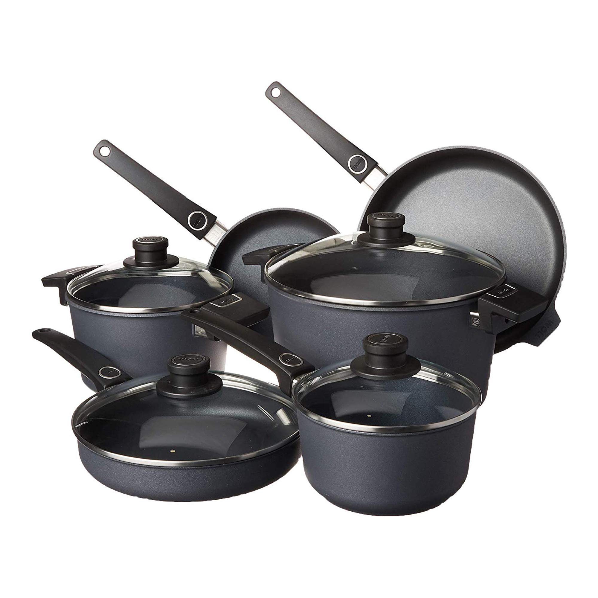
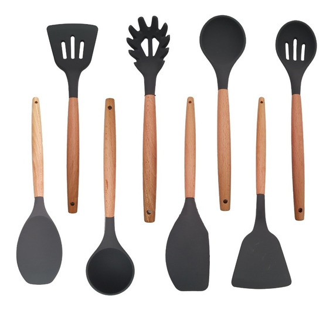
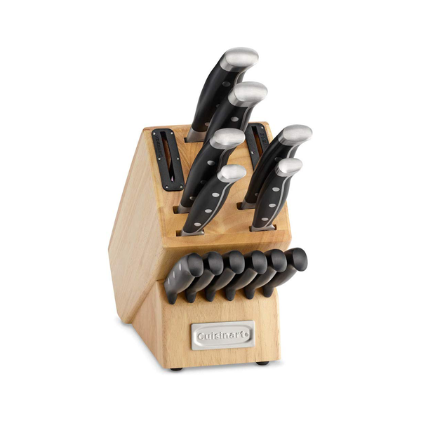
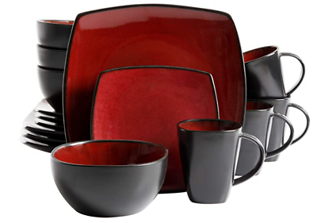
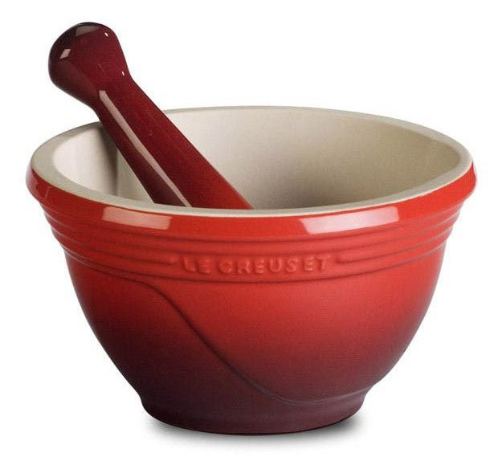
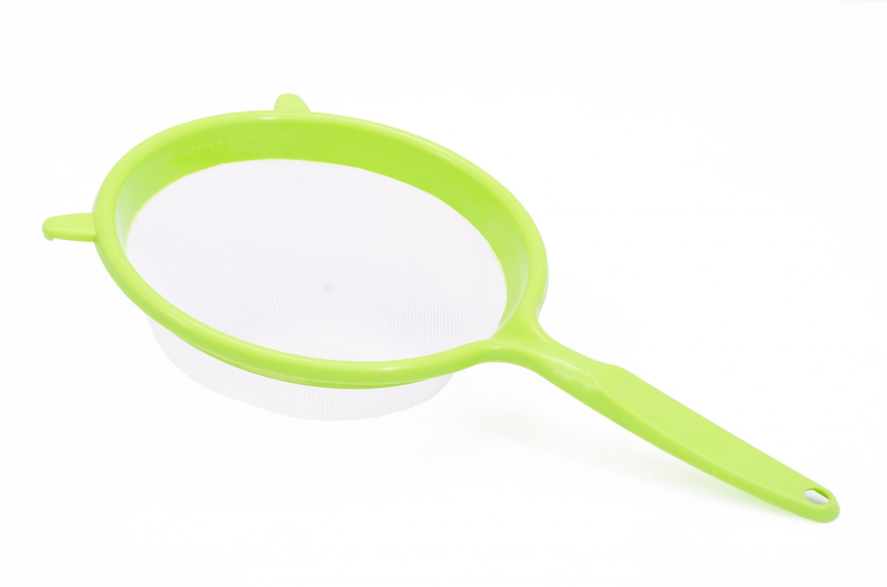
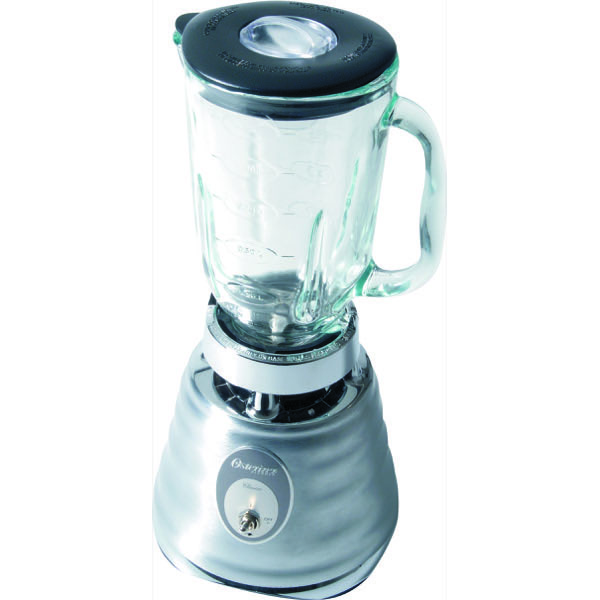
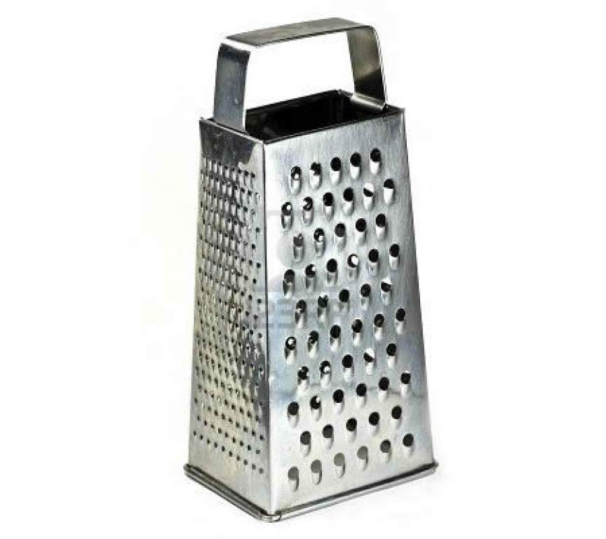
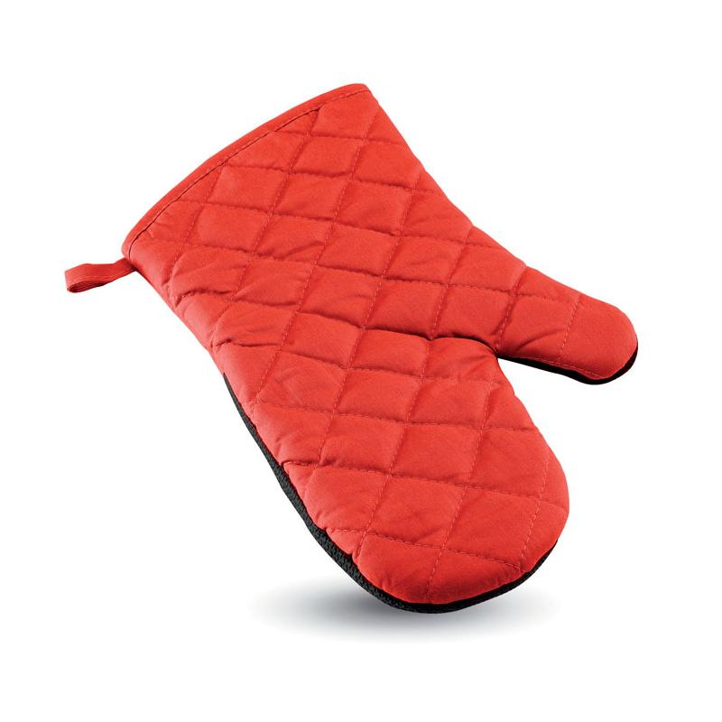

More Website Templates @ TemplateMonster.com - July 30, 2014!

Juego de cocina definitivo: el juego de utensilios de cocina Diamond Lite de WOLL's está fabricado en Alemania y cuenta con un diseño de 5 capas para una mayor durabilidad: una capa superior reforzada con diamantes, una capa base antiadherente de larga duración, una capa anticorrosión única, una capa base resistente a los cortes y aluminio arenado. La capa superior duradera cocina y limpia con facilidad y ofrece una excelente retención de calor para un calentamiento eficiente e incluso dorado.
650,00 $.

Hermoso set profesional de utensilios de cocina. Fabricados en silicona y mango de madera antideslizante que proporciona un mejor agarre.
Resistente a altas temperaturas. Diseñado para no doblarse. La cabeza de silicona protege tus sartenes, mantiene la superficie de los utensilios de cocina evitando rayaduras y abolladuras, prolongando la vida de todas tus sartenes de cocina.
40,00 $

El juego de cubiertos de 12 piezas Color Pro Collection con bloque es una forma elegante de facilitar la preparación de la cena. ¡Este conjunto contiene todo lo que necesita para cortar, rebanar, cortar en cubitos, picar y tallar!
139,00 $

Utensilio imprescindible para cualquier chef. Permite majar, moler y triturar especias, ajos, cereales y todo tipo de ingredientes para elaborar condimentos deliciosos que agregar a tus recetas.
90,00 $

El sushi es un plato de la gastronomía japonesa con base de arroz condimentado con vinagre y azúcar. Aunque tradicionalmente se usaba pescado crudo para acompañar el arroz, con el tiempo los ingredientes han ido evolucionando y ahora podemos encontrar desde verduras a pescado cocinado o carne.
35,00 $.

Es perfecto para cernir tus alimentos preparados en licuadora o procesadora, tamaño ideal que se adapta a cualquier tamaño de olla o recipiente.
35,00 $

Prepara deliciosos batidos de proteína con la Licuadora Clásica de la marca Oster, este maravillosos electrodoméstico de cocina incluye un vaso de vidrio con capacidad de 1.250 lts y resistente al calor; el diseño en cromo lo hace ideal para combinar con cualquier estilo de cocina.
40,00 $

4 lados de rejilla diferentes: diseño tradicional con 4 lados que tienen una variedad de capacidades de rejilla y corte para que lo utilices.
15,00 $

Set de 2 manoplas para horno, con óptima resistencia al calor y al fuego.
15,00 $
{kind=link}
{kind=link}
{kind=link}
{kind=link}
{kind=link}
{kind=link}
{kind=link}
{kind=link}
{kind=link}